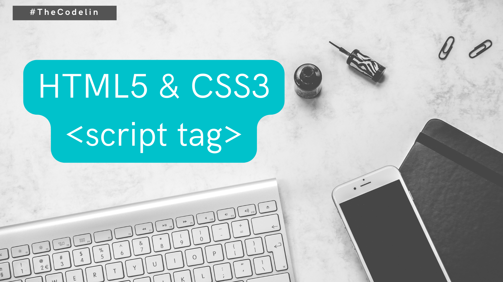

Soft Skills yang Harus Dimiliki Oleh Seorang Programmer
Halo teman-teman, tentunya kita sudah sama-sama tahu bahwa untuk menjadi seorang programmer yang handal, itu butuh skill atau pemahaman hal teknis di dunia programming baik itu memahami Bahasa pemrograman dan cara ngodingnya, misal ap aitu variable, tipe, operasi matematika, looping, percabangan, function, array, objek dan lain sebagainya.
Dan kita juga harus tahu mengenai library, framework atau juga teknologi-teknologi terkini lainnya serta paham mengenai platformnya, misal desktop, web dan mobile dan mesti harus banyak lagi teknologi lain yang wajib kita kuasai agar kita bisa menjadi seorang programmer.
Tapi teman-teman tahu gak, disamping menguasai Teknik dan skill yang sudah kita sebutkan tadi, sebetulnya ada juga skill-skill non teknis atau soft skill yang harus kita miliki juga agar kita bisa lebih lancar dan mantap ketika kita ingin menjadi seorang programmer yang handal. Soft skill apa aja yang harus kita miliki, berikut adalah soft skill yang harus kita miliki jika ingin menjadi seorang programmer.
- Humility / Kerendahan Hati
- Hacker Mentality / Mental Seorang Hacker
- Problem Solving